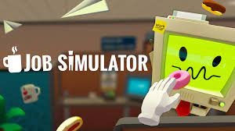

Job Simulator es un juego de realidad virtual. En un mundo donde los robots han reemplazado todos los trabajos humanos, te sumerges en el “Job Simulator” para experimentar cómo era “trabajar”. Puedes revivir los días de gloria laboral simulando las tareas de un chef gourmet, un empleado de oficina, un dependiente de una tienda de conveniencia y más!
